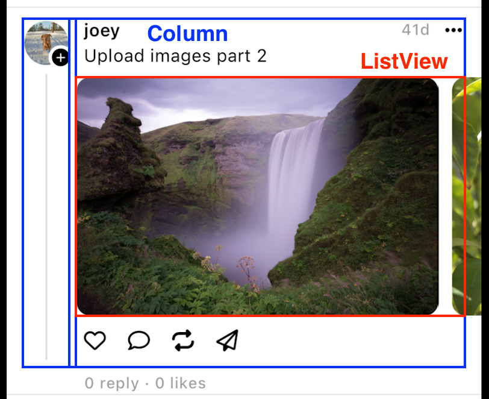
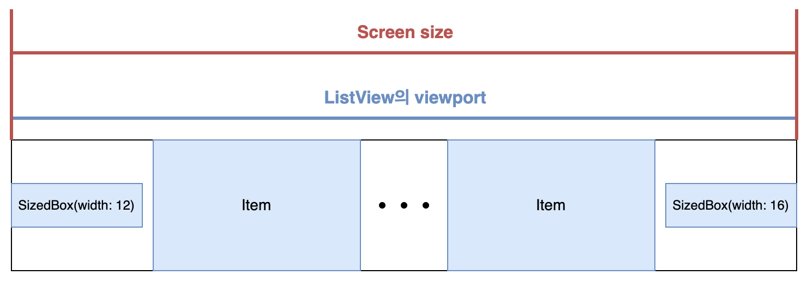

문제 상황
ListView를Clip.none으로 설정하면 item들이 scroll될 때ListView의 실제 영역을 벗어나서 화면 밖으로 사라질 때 까지 화면에 유지될 것이라고 예상- 하지만 실제로는 item이 화면 밖으로 나가기 전에 먼저 화면에서 사라짐

- 이
ListView는Padding및 다른 widget들의 하위 widget
원인 분석
- Flutter GitHub에 이미 같은 문제로 issue가 올라왔었다.
- 이 repo의 contributor에 따르면, 이것은 의도된 동작이라고 한다.
it looks like this is working as intended.. The Padding around the ListView is what is causing this effect. The padding makes the viewport of the ListView smaller, although it is not visibly apparent. Then with Clip.none set, the bounds of that viewport are not clipped, so you can see as the items exit they are disposed since they are outside of the actual scrolling window due to the Padding.
- 즉,
ListView나PageView같은 scrollable widget들의 item이 화면에서 사라지는 시점은 screen 밖으로 나갈 때가 아닌 “해당 widget의 viewport 밖으로 완전히 나갈 때“이다. - 문제 상황에서 item이 사라지는 지점도
ListView영역을 완전히 벗어나는 지점과 일치한다.
문제 해결
ListViewitem들이 화면 밖으로 완전히 나갈 때 까지는 화면에 표시되기를 원하므로,ListView의 viewport가 screen size와 동일하게 만들어주면 문제를 해결할 수 있다.ListView를 감싸고 있는Paddingwidget이 horizontal inset을 갖지 않게 만들고, padding 역할을 하는 빈 widget을ListView의 양 끝에 추가해 준다.- 이제
ListView의 viewport와 screen size가 같으므로 item이 화면 밖으로 나갈 때 까지 화면에 보여진다.